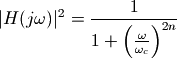
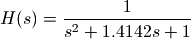

数字信号系统¶
FIR和IIR滤波器¶
在数字信号处理领域中，数字滤波器占有非常重要的地位。根据其计算方式可以分为FIR(有限脉冲响应)滤波器，和IIR(无限脉冲响应)滤波器两种。
FIR滤波器根据如下公式进行计算：
![y[m] & = b[0] x[m] + b[1] x[m-1] + \cdots + b[P] x[n-P]](_images/math/f9f90f3b95dd35ca559d96d8a94be77e25fe8297.png)
IIR滤波器根据如下公式(直接1型)进行计算：
其中x是输入信号，数组a和b是滤波器的系数，y是滤波器的输出。我们可以把FIR滤波器看作是IIR滤波器的一种特殊情况：当系数a都为0时就从IIR滤波器变为了FIR滤波器了。
根据FIR滤波器的计算公式我们可以知道，时刻m的输出y[m]由时刻m的输入x[m]以及之前的输入x[m-1] ... x[m-P]和滤波器的系数b[0] ... b[P]求乘积和而得。而IIR滤波器只不过是再减去之前的输出y[m-1] ... y[m-Q]和系数a[1] ... a[m-Q]的乘积和。
总之，数字滤波器的计算方法并不复杂，仅仅是数组对应元素的乘积和求和而已。然而其计算量对于Python来说是相当大的：通常FIR滤波器的系数长度都上百，而CD音质的数字声音信号一秒钟有44100个取样值，假设滤波器的长度是100，那么一秒钟需要计算4百万次以上的乘积和加法。这对于Python这样的动态语言来说是很困难的。
因此scipy的signal库中提供了lfilter函数完成数字滤波器的计算工作。由于它是在C语言级别实现的，因此处理速度相当快：
signal.lfilter(b, a, x, axis=-1, zi=None)
其中的b和a是滤波器的系数，x是输入。lfilter函数并不是直接使用上面的IIR滤波器计算公式进行计算，而是对其进行了如下的变形：
y[m] = b[0]*x[m] + z[0,m-1] (1)
z[0,m] = b[1]*x[m] + z[1,m-1] - a[1]*y[m] (2)
...
z[n-3,m] = b[n-2]*x[m] + z[n-2,m-1] - a[n-2]*y[m]
z[n-2,m] = b[n-1]*x[m] - a[n-1]*y[m]
这段公式就没有那么直白了，但是只需要仔细的观察一下就不难发现，将式(2)的时间变为m-1，得到：
z[0,m-1] = b[1]*x[m-1] + z[1,m-2] - a[1]*y[m-1] (3)
将其带入到式(1)中，发现b[0]*x[m], b[1]*x[m-1], - a[1]*y[m-1]等项已经和IIR公式中的一致，依次如此代入下去最后得到的公式和IIR滤波器的公式是一致的。这个计算公式被称为直接2型。
直接1型的公式中，为了计算m时刻的输出y[m]，除了需要m时刻的输入x[m]之外，还需要x[m-1]到x[m-P]和y[m-1]到y[m-Q]，这些值都需要被作为滤波器的内部状态保存起来，因此需要保存P+Q个数。而根据直接2型的公式，只需要保存n-1个数z[0]到z[n-2]，其中n为 max(len(a), len(b)) ，即max(P, Q)。数组z就是滤波器的状态。
滤波器的初始状态通过关键字参数zi传到lfilter函数，当zi不是None时，lfilter将返回滤波器的最终状态zf，于是其返回值为(y, zf)，如果zi为None的话，那么只返回滤波器的输出y。
当使用lfilter对很长的输入进行滤波计算时，不能一次把数据都读入到数组x中，因此需要对数据进行分段滤波，这时就需要将上一次调用lfilter时返回的数组zf，传递到下一次lfilter函数调用。下面的程序演示了这种分段滤波的方法：
1 2 3 4 5 6 7 8 9 10 11 12 13 14 15 16 17 18 19 20 21 22 23 24 25 26 27 28 29 30 31 32 33 34 35 36 37 38 39 | # -*- coding: utf-8 -*-
import scipy.signal as signal
import numpy as np
import pylab as pl
# 某个均衡滤波器的参数
a = np.array([1.0, -1.947463016918843, 0.9555873701383931])
b = np.array([0.9833716591860479, -1.947463016918843, 0.9722157109523452])
# 44.1kHz， 1秒的频率扫描波
t = np.arange(0, 0.5, 1/44100.0)
x= signal.chirp(t, f0=10, t1 = 0.5, f1=1000.0)
# 直接一次计算滤波器的输出
y = signal.lfilter(b, a, x)
# 将输入信号分为50个数据一组
x2 = x.reshape((-1,50))
# 滤波器的初始状态为0， 长度是滤波器系数长度-1
z = np.zeros(max(len(a),len(b))-1, dtype=np.float)
y2 = [] # 保存输出的列表
for tx in x2:
# 对每段信号进行滤波，并更新滤波器的状态z
ty, z = signal.lfilter(b, a, tx, zi=z)
# 将输出添加到输出列表中
y2.append(ty)
# 将输出y2转换为一维数组
y2 = np.array(y2)
y2 = y2.reshape((-1,))
# 输出y和y2之间的误差
print np.sum((y-y2)**2)
# 绘图
pl.plot(t, y, t, y2)
pl.show()
|
程序所输出的误差为0，经过滤波器之后的频率扫描波形如下图所示：

经过均衡滤波器之后的频率扫描波形
此程序中使用的IIR滤波器的系数为二次均衡滤波器的系数，其系数的设计算法将在下节进行介绍。为了观察滤波器的频率特性，我们让它对频率扫描波进行处理。分别采用一次滤波和分段滤波两种方式调用lfilter函数，我们看到两个结果完全一样。使用分段滤波结合pyaudio库，我们很容易写出对声卡采集的连续的声音信号进行滤波并输出的实时滤波程序。
如果将一个脉冲信号输入到滤波器中，所得到的输出被称为滤波器的其脉冲响应。所谓脉冲信号就是在时刻0为1，其余时刻均为0的信号。根据FIR滤波器的公式，FIR滤波器的脉冲响应就是滤波器的系数。而IIR滤波器的脉冲响应就不是很直观了，下面使用lfilter计算IIR滤波器的脉冲响应，其中的IIR滤波器的系数和前面的一样（在IPython或者Spyder中运行上面的程序之后，再输入下面的程序）：
>>> impulse = np.zeros(1000, dtype=np.float)
>>> impulse[0] = 1
>>> h = signal.lfilter(b, a, impulse)
>>> h[-1]
-4.2666825205952273e-12

均衡滤波器的脉冲响应
如果你观察一下h的具体的值就会发现随着时间的推移，h越来越小，但是始终不会为0，其脉冲响应是无限长度的，因此才被称作无限脉冲响应滤波器。如果我们将h当作FIR滤波器的系数对信号x进行滤波的话，得到的结果
>>> y3 = signal.lfilter(h, 1, x)
>>> np.sum((y-y3)**2)
3.7835244127856444e-17
显然由于h是逐渐衰减的，只要我们测量足够长的脉冲响应，就可以用FIR滤波器足够精确地模拟IIR滤波器。下图显示的是误差和FIR滤波器的长度之间的关系。显然由于IIR滤波器的脉冲响应是呈指数衰减的，因此精度随着长度呈指数增加，请注意Y轴是对数坐标。

随着FIR滤波器的长度的增加误差呈指数减小
此图的计算程序如下，注意用lfilter计算FIR滤波器时，设置参数a的值为1：
1 2 3 4 5 6 7 8 9 10 11 12 13 14 15 16 17 18 19 20 21 22 23 24 25 26 27 28 29 30 31 32 33 34 | # -*- coding: utf-8 -*-
import scipy.signal as signal
import numpy as np
import pylab as pl
# 某个均衡滤波器的参数
a = np.array([1.0, -1.947463016918843, 0.9555873701383931])
b = np.array([0.9833716591860479, -1.947463016918843, 0.9722157109523452])
# 44.1kHz， 1秒的频率扫描波
t = np.arange(0, 0.5, 1/44100.0)
x= signal.chirp(t, f0=10, t1 = 0.5, f1=1000.0)
y = signal.lfilter(b, a, x)
ns = range(10, 1100, 100)
err = []
for n in ns:
# 计算脉冲响应
impulse = np.zeros(n, dtype=np.float)
impulse[0] = 1
h = signal.lfilter(b, a, impulse)
# 直接FIR滤波器的输出
y2 = signal.lfilter(h, 1, x)
# 输出y和y2之间的误差
err.append(np.sum((y-y2)**2))
# 绘图
pl.figure(figsize=(8,4))
pl.semilogy(ns , err, "-o")
pl.xlabel(u"脉冲响应长度")
pl.ylabel(u"FIR模拟IIR的误差")
pl.show()
|
FIR滤波器设计¶
理想的低通滤波器频率响应如下图所示：
理想低通滤波器的频率响应
其中 为取样频率，  为阻带频率。通常为了计算方便，将取样频率正规化为1。于是 的含义就是每个取样点所包含的信号的周期数，例如0.1表示每个取样点包含0.1个周期，即一个周期有10个取样点。根据离散傅立叶变换的公式可以求出此理想低通滤波器的脉冲响应为：
为阻带频率。通常为了计算方便，将取样频率正规化为1。于是 的含义就是每个取样点所包含的信号的周期数，例如0.1表示每个取样点包含0.1个周期，即一个周期有10个取样点。根据离散傅立叶变换的公式可以求出此理想低通滤波器的脉冲响应为：
其中n为负无穷到正无穷的整数。显然此脉冲响应不但无限长，而且不满足因果律，因为输入信号在0时刻出现的脉冲，而输出信号却在0时刻之前就有值了。
这样的脉冲响应当然无法用FIR滤波器实现，一个最直观的近似方法就是取 中 0<=n<L 的L个值当作低通FIR滤波器的系数。下面的程序计算此低通滤波器的频率响应：
1 2 3 4 5 6 7 8 9 10 11 12 13 14 15 16 17 | # -*- coding: utf-8 -*-
import scipy.signal as signal
import numpy as np
import pylab as pl
def h_ideal(n, fc):
return 2*fc*np.sinc(2*fc*np.arange(-n, n, 1.0))
b = h_ideal(30, 0.25)
w, h = signal.freqz(b)
pl.figure(figsize=(8,3))
pl.plot(w/2/np.pi, 20*np.log10(np.abs(h)))
pl.xlabel(u"正规化频率 周期/取样")
pl.ylabel(u"幅值(dB)")
pl.show()
|

截取sinc函数正时间部分作为脉冲响应的低通滤波器
用freqz计算频率响应
freqz用于计算数字滤波器的频率响应，它的调用方式如下：
freqz(b, a=1, worN=None, whole=0, plot=None)
其中b和a是滤波器的系数，worN为所计算的频率点数，whole为0表示计算频率的上限为pi，whole为1表示计算频率的上限为2*pi。
它返回一个组元 (w,h) ，其中w为所有计算了响应的频率数组，其值为正规化的圆频率，因此通过w/(2*pi)可以计算出对应的正规化频率。h是一个复数数组，它表示滤波器系统在每个对应的频率点的响应。复数的幅值表示滤波器的增益特性，相角表示滤波器的相位特性。
程序中使用freqz计算滤波器的频率响应，并用 20*np.log10(np.abs(h)) 计算h以dB衡量的幅值。
用firwin设计滤波器¶
显然此频率响应和理想的低通滤波器相差甚远，并且即使增加FIR滤波器的系数也没有作用。因为我们舍弃了n<0的那一半系数，而这些系数有着相当大的影响，因此只截取n>=0的部分是不够的，如果我们将n<0的那一半系数也添加进滤波器的话，得到的频率响应将会有很大的改善。如下重新定义h_ideal函数，它返回中-n到n之间的系数：
def h_ideal(n, fc):
return 2*fc*np.sinc(2*fc*np.arange(-n, n, 1.0))
下面是添加n<0系数之后的频率响应：

对称截取sinc函数的低通滤波器
这样做虽然改善了频率响应，但是给系统带来了许多延时，为了频率响应更好必须增加滤波器的点数，然而为了减少延时，必须减少点数，为了解决这个矛盾，我们给系数乘上一个窗函数，让它快速收敛。
SciPy提供了firwin用窗函数设计低通滤波器，firwin的调用形式如下：
firwin(N, cutoff, width=None, window='hamming')
其中N为滤波器的长度；cutoff为以正规化的频率；window为所使用的窗函数。
下面的程序用firwin设计低通滤波器，并且和上面的结果进行比较，注意由于firwin的cutoff频率是以取样频率/2正规化的，因此它是前面所介绍的的两倍。
1 2 3 4 5 6 7 8 9 10 11 12 13 14 15 16 17 18 19 20 21 22 23 24 25 26 | # -*- coding: utf-8 -*-
import scipy.signal as signal
import numpy as np
import pylab as pl
def h_ideal(n, fc):
return 2*fc*np.sinc(2*fc*np.arange(-n, n, 1.0))
b = h_ideal(30, 0.25) # 以fs正规化的频率
b2 = signal.firwin(len(b), 0.5) # 以fs/2正规化的频率
w, h = signal.freqz(b)
w2, h2 = signal.freqz(b2)
pl.figure(figsize=(8,6))
pl.subplot(211)
pl.plot(w/2/np.pi, 20*np.log10(np.abs(h)), label=u"h_ideal")
pl.plot(w2/2/np.pi, 20*np.log10(np.abs(h2)), label=u"firwin")
pl.xlabel(u"正规化频率 周期/取样")
pl.ylabel(u"幅值(dB)")
pl.legend()
pl.subplot(212)
pl.plot(b, label=u"h_ideal")
pl.plot(b2, label=u"firwin")
pl.legend()
pl.show()
|
firwin使用窗函数设计的低通滤波器的频率响应和脉冲响应
使用firwin函数设计的滤波器并不是最优化的，为了实现同样效果频率响应，还存在长度更短的FIR滤波器。
用remez设计滤波器¶
remez函数能够帮助我们找到更优的滤波器系数。remez的调用形式如下：
remez(numtaps, bands, desired,
weight=None, Hz=1, type='bandpass', maxiter=25, grid_density=16)
其中：
- numtaps : 所设计的FIR滤波器的长度
- bands ： 一个递增序列，它包括频率响应中的所有频带的边界，其值在0到Hz/2之间，如果参数Hz为缺省值1的话，那么可以把它当作是以取样频率正规化的频率
- desired : 长度为bands的一半的增益序列，它给出频率响应在bands中的每个频带的增益值
- weight : 长度和desired一样的权重序列，它给出desired中的每个增益所占的权重，即给出desired中的每个增益的重要性，值越大表示其越重要
- type : 'bandpass'或者'differentiator'，本书只介绍type为'bandpass'的情况
remez算法
remez是一种迭代算法，它能够找到一个n阶多项式，使得在指定的区间中此多项式和指定函数之间的最大误差最小化。由于FIR滤波器的频率响应实际上是一个多项式函数（请参考下节内容），因此可以用remez算法进行FIR滤波器系数设计。
remez返回经过remez算法最优化之后的FIR滤波器的系数。此系数和用firwin所设计的结果一样是对称的。当numtaps为偶数时，所设计的滤波器对于取样频率/2的响应为0，因此无法设计出长度为偶数的高通滤波器。
下面的程序演示通过remez设计高通滤波器：
1 2 3 4 5 6 7 8 9 10 11 12 13 14 | # -*- coding: utf-8 -*-
import scipy.signal as signal
import numpy as np
import pylab as pl
for length in [11, 31, 51, 101, 201]:
b = signal.remez(length, (0, 0.18, 0.2, 0.50), (0.01, 1))
w, h = signal.freqz(b, 1)
pl.plot(w/2/np.pi, 20*np.log10(np.abs(h)), label=str(length))
pl.legend()
pl.xlabel(u"正规化频率 周期/取样")
pl.ylabel(u"幅值(dB)")
pl.title(u"remez设计高通滤波器 - 滤波器长度和频响的关系")
pl.show()
|
程序中，remez函数的bands参数给出两个频带(以取样频率正规化)：0到0.18和0.2到0.5，而desired给出两个频带的增益分别为0.01和1，因此它所设计的是一个通带频率为0.2、阻带增益为-40dB的高通滤波器。
此程序显示出滤波器长度和频率响应之间存在如下关系，可以看出滤波器越长，频率响应越接近设计值：
remez设计的高通滤波器，长度越长频率响应越接近设计值
下图显示权值和频率响应之间的关系，图中的滤波器长度为101。我们注意到，当权值为1, 0.01(红色曲线)时，两个频带的增益抖动量相同，这个权值正好和增益desired的设置相反。这时因为缺省情况下，增益越大的频带的频率响应要求越精确，而当权值和增益的乘积相等时，频率响应的误差也就相同了。

remez设计滤波器时权值影响频率响应
滤波器级联¶
假设有两个滤波器h1和h2，我们将h1的输出输入到h2，这样得到的滤波器称为h1和h2的级联。级联后的滤波器的脉冲响应为h1和h2的脉冲响应的卷积，而其频率响应为两个滤波器的频率响应的乘积。
下面的程序先用remez分别设计一个高通滤波器h1和一个低通滤波器h2，然后通过卷积计算出它们的级联滤波器h3的系数：
1 2 3 4 5 6 7 8 9 10 11 12 13 14 15 16 17 | # -*- coding: utf-8 -*-
import scipy.signal as signal
import numpy as np
import pylab as pl
h1 = signal.remez(201, (0, 0.18, 0.2, 0.50), (0.01, 1))
h2 = signal.remez(201, (0, 0.38, 0.4, 0.50), (1, 0.01))
h3 = np.convolve(h1, h2)
w, h = signal.freqz(h3, 1)
pl.plot(w/2/np.pi, 20*np.log10(np.abs(h)))
pl.legend()
pl.xlabel(u"正规化频率 周期/取样")
pl.ylabel(u"幅值(dB)")
pl.title(u"低通和高通级联为带通滤波器")
pl.show()
|
最后使用freqz函数计算h3的频率响应：
低通和高通滤波器级联之后是带通滤波器
可以看出，所得到的是一个带通滤波器。
我们也可以直接用remez设计带通滤波器：
>>> h4 = signal.remez(201, (0, 0.18, 0.2, 0.38, 0.4, 0.50), (0.01, 1, 0.01))
如果你观察此滤波器的频率响应的话，发现它和h3的基本一致，如果比较h3和h4的话，我们得到如下结果：
级联的滤波器和remz设计的带通滤波器的脉冲响应近似
可以看出虽然h3的长度几乎是h4的两倍，但是由于它的许多系数都接近于0，因此h3和h4的频率响应近似相同。
IIR滤波器设计¶
通常在设计数字IIR滤波器时，都会先设计一个对应的模拟滤波器，然后通过双线性变换将模拟滤波器转换为数字滤波器。这意味着我们需要在s复平面上设计滤波器的传递函数H(s)。当H(s)的所有的极点都在s的左半平面时，滤波器的响应是稳定的。下面以巴特沃斯滤波器为例，说明这一设计过程。
巴特沃斯低通滤波器¶
巴特沃斯低通滤波器的振幅的平方和频率之间的关系可以用如下公式表示：

其中n为滤波器的阶数，为振幅下降3dB时的截止频率。这个公式很容易理解：
- 当时，
 越小，振幅越接近于1
越小，振幅越接近于1 - 当时，越大，振幅越接近于0
- 随着n的增大，振幅接近于1或者0的速度将变快，即n越大，低通滤波器在阻频带的衰减速度将越快
- 当时，振幅的平方为1/2，即-3dB
下面我们推导出巴特沃斯低通滤波器的传递函数H(s)，其中，为复数平面上的点。
由于当 时，
时， ，因此将
，因此将 带入到巴特沃斯低通滤波器的振幅平方公式中可以得到：
带入到巴特沃斯低通滤波器的振幅平方公式中可以得到：
此公式有2n个极点，其中n个在左半平面，n个在右半平面，由于H(s)必须是稳定的，因此左半平面的n的极点属于H(s)。
最后得到的传递函数为：
其中 为左半平面上的极点：
为左半平面上的极点：

下面的程序绘制6、7阶巴特沃斯低通滤波器的S复平面上的极点：
1 2 3 4 5 6 7 8 9 10 11 12 13 14 15 16 17 18 | # -*- coding: utf-8 -*-
from scipy import signal
import numpy as np
import matplotlib.pyplot as pl
pl.figure(figsize=(5,5))
b, a = signal.butter(6, 1.0, analog=1)
z,p,k = signal.tf2zpk(b, a)
pl.plot(np.real(p), np.imag(p), '^', label=u"6阶巴特沃斯极点")
b, a = signal.butter(7, 1.0, analog=1)
z,p,k = signal.tf2zpk(b, a)
pl.plot(np.real(p), np.imag(p), 's', label=u"7阶巴特沃斯极点")
pl.axis("equal")
pl.legend(loc="center right")
pl.show()
|
程序中，使用butter函数设计巴特沃斯滤波器，缺省情况下它设计的是数字滤波器，为了设计模拟滤波器，需要传递关键字参数analog=1。获得传递函数的b和a的系数之后，通过tf2zpk函数将它们转换为零点和极点：

巴特沃斯低通滤波器在S复平面上的极点分布
双线性变换¶
有了连续时间的传递函数H(s)，下一步就是如何将它转换为离散时间的传递函数H(z)。转换的方法有几种，其中最常用的是双线性变换，其变换公式为：

其中T为离散时间的取样周期。双线性变换公式的推导过程请参考下面的链接：
双线性变换公式推导： http://en.wikipedia.org/wiki/Bilinear_transform
双线性变换实际上是s复平面和z复平面上的点的映射变换，他将s复平面上的竖线变换成z复平面上的圆，而s复平面上的Y轴对应于z复平面上的单位圆。下面的程序演示了这一对应关系：
1 2 3 4 5 6 7 8 9 10 11 12 13 14 15 16 17 18 19 20 21 22 23 24 25 26 27 28 | # -*- coding: utf-8 -*-
import numpy as np
import pylab as pl
def stoz(s):
"""
将s复平面映射到z复平面
为了方便起见，假设取样周期T=1
"""
return (2+s)/(2-s)
def make_vline(x):
return x + 1j*np.linspace(-100.0,100.0,20000)
fig = pl.figure(figsize=(7,3))
axs = pl.subplot(121)
axz = pl.subplot(122)
for x in np.arange(-3, 4, 1):
s = make_vline(x)
z = stoz(s)
axs.plot(np.real(s), np.imag(s))
axz.plot(np.real(z), np.imag(z))
axs.set_xlim(-4,4)
axz.axis("equal")
axz.set_ylim(-3,3)
pl.show()
|
程序中的stoz函数是将s变换为z的变换公式，只需要对上述的双线性变换公式稍作变形即可得到，这里为了方便起见，假设取样周期T=1。

双线性变换将s平面(左图)上的竖线变换为z平面上的圆(右图)
通过双线性变换之后，滤波器的频率响应会发生变化。在下一节中我们会介绍，离散时间的滤波器的频率响应是将其传递函数H(z)用 进行替换。将其带入到双线性变换公式得到：
进行替换。将其带入到双线性变换公式得到：
对于s平面上的点来说，过原点的竖线就是连续时间传递函数H(s)的频率响应，因此双线性变换将离散时间的频率通过如下的公式转换为连续时间的频率:
而其反函数为：
下面让我们用程序来验证这个频率转换公式。首先我们载入所需要的库，并且定义离散时间的取样频率fs为8kHz，设计的巴特沃斯低通滤波器通带截至频率为1kHz：
>>> from scipy import signal
>>> from numpy import *
>>> fs = 8000.0
>>> f = 1000.0
下面使用butter函数设计一个3阶的巴特沃斯滤波器，注意关键字参数analog=1，表示设计连续时间传递函数H(s)的系数，由于通带频率参数为圆频率，因此需要乘以2*pi：
>>> b, a = signal.butter(3, 2*pi*f, analog=1)
模拟滤波器的系数b和a和H(s)的关系
假设b和a的长度分别为M和N，模拟滤波器的系数中b[0]为分子中项的系数，a[0]为分母中 ，b[-1]和a[-1]为分子分母的常数项的系数，即：
，b[-1]和a[-1]为分子分母的常数项的系数，即：
然后调用双线性变换函数bilinear，将系数转换为离散时间的传递函数系数，通过关键字参数fs指定取样频率：
>>> b2, a2 = signal.bilinear(b,a,fs=fs)
接下来调用freqz函数得到此数字滤波器的频率响应，为了得到尽可能精确的值，我们通过worN关键字参数让它计算10000点的频率响应：
>>> w2, h2 = signal.freqz(b2,a2,worN=1000)
接下来将h2转换为增益，并且找到增益为-3dB(精确值为10*log10(0.5))时所对应的正规化圆频率w的下标idx，w/(2*pi)*fs就是其对应的实际频率值：
>>> p2 = 20*log10(abs(h2))
>>> idx = argmin(abs(p2-10*log10(0.5)))
>>> w2[idx]/2/pi*8000
952.8
通过频率转换公式得到的频率为：
>>> 2*fs*arctan(2*pi*f/2/fs) /2/pi
952.8840223
实际使用scipy.signal库设计IIR滤波器没有这么麻烦，因为它所提供的滤波器设计函数缺省都是直接设计数字滤波器。这些函数设计数字滤波器时采用的取样频率为2，即以香农频率fs/2为1进行正规化。因此要设计取样频率为fs、通带频率为f的滤波器需要将通带频率正规化为f/(fs/2)，下面调用butter函数设计数字低通滤波器，这里使用上述计算所得的通带频率：
>>> b3,a3 = signal.butter(3, 952.8840223/(fs/2))
>>> sum(abs(b3-b2))
1.3226225670237568e-13
>>> sum(abs(a3-a2))
7.0876637892069994e-13
数字滤波器的系数b和a和H(z)的关系
假设b和a的长度分别为M和N，数字滤波器的系数中b[0]和a[0]分别为分子分母中常数项的系数，a[-1]为分母中，b[-1]为分子中的系数，即：

所得的滤波器的系数b3和a3与手工通过bilinear函数计算的系数b2和a2是一致的。在signal库设计数字滤波器时，其内部会先通过频率转换公式对频率进行转换，然后设计连续时间的传递函数系数，最后通过bilinear函数进行系数转换。有兴趣的读者可以查看signal.iirfilter函数的源代码。
滤波器的频带转换¶
只要知道了低通滤波器的传递函数H(s)，就很容易利用变量替换设计出同样阶数的高通、带通或者其它通带频率的低通滤波器。让我们来看看低通滤波器的变换。
假设我们使用巴特沃斯低通滤波器设计公式，设计出通带频率为1弧度/秒的标准低通滤波器：
>>> b, a = signal.butter(2, 1.0, analog=1)
>>> np.real(b)
array([ 1.])
>>> np.real(a)
array([ 1. , 1.41421356, 1. ])

为了让它变为通带频率为的低通滤波器，只需要进行如下替换：

由于当时，H(s)就是滤波器的频率响应。因此所设计的标准低通滤波器H(s)在 时振幅下降3dB的，而则在处下降3dB。下面是通带频率为2弧度/秒的2阶低通滤波器的系数：
时振幅下降3dB的，而则在处下降3dB。下面是通带频率为2弧度/秒的2阶低通滤波器的系数：
>>> b2, a2 = signal.butter(2, 2.0, analog=1)
>>> np.real(b2)
array([ 4.])
>>> np.real(a2)
array([ 1. , 2.82842712, 4. ])
可以看出将 代入到前面的H(s)中即可得到这些系数。
代入到前面的H(s)中即可得到这些系数。
低通滤波器转高通滤波器的替代公式为：

此替代公式很容易理解：
- 若为0，则替代之后的频率为无穷大，而低通滤波器无穷大处的频率响应为0，即转换之后的滤波器在0处的频率响应为0；
- 若为无穷大，则替代之后的频率为0，因此转换之后的滤波器在无穷大处频率响应为1。
下面设计通带频率为1弧度/秒的高通滤波器：
>>> b3,a3 = signal.butter(2,1.0,btype="high",analog=1)
>>> np.real(b3)
array([ 1., 0., 0.])
>>> np.real(a3)
array([ 1. , 1.41421356, 1. ])
可以看出这些系数是将带入到H(s)中之后，上下分母乘以 之后得到的。
之后得到的。
低通滤波器还可以转换为带通滤波器，这可能有点难以理解，让我们先来看看替代公式，假设带通滤波器的高低通带频率为和 ：
：
其中， 。 被称为通带带宽，而则是通带的中心频率。
。 被称为通带带宽，而则是通带的中心频率。
让我们通过下面的程序来研究一下为何这种替代能够将低通映射为带通滤波器：
1 2 3 4 5 6 7 8 9 10 11 12 13 14 15 16 17 18 19 20 21 22 23 24 25 26 27 28 29 30 31 32 33 34 35 36 37 38 39 40 41 42 | # -*- coding: utf-8 -*-
import numpy as np
from scipy import signal
import pylab as pl
b, a = signal.butter(2, 1.0, analog=1)
# 低通->带通的频率变换函数
w1 = 1.0 # 低通带频率
w2 = 2.0 # 高通带频率
dw = w2 - w1 # 通带宽度
w0 = np.sqrt(w1*w2) # 通带中心频率
# 产生10**-2到10**2的频率点
w = np.logspace(-2, 2, 1000)
# 使用频率变换公式计算出转换之后的频率
nw = np.imag(w0/dw*(1j*w/w0 + w0/(1j*w)))
_, h = signal.freqs(b, a, worN=nw)
h = 20*np.log10(np.abs(h))
pl.figure(figsize=(8,5))
pl.subplot(221)
pl.semilogx(w, nw) # X轴使用log坐标绘图
pl.xlabel(u"变换前圆频率(弧度/秒)")
pl.ylabel(u"变换后圆频率(弧度/秒)")
pl.subplot(222)
pl.plot(h, nw)
pl.xlabel(u"低通滤波器的频率响应(dB)")
pl.subplot(212)
pl.semilogx(w, h)
pl.xlabel(u"变换前圆频率(弧度/秒)")
pl.ylabel(u"带通滤波器的频率响应(dB)")
pl.subplots_adjust(wspace=0.3, hspace=0.3, top=0.95, bottom=0.14)
print "center:", w[np.argmin(np.abs(nw))]
pl.show()
|
程序中先使用butter函数设计一个模拟的二阶标准低通滤波器：
b, a = signal.butter(2, 1.0, analog=1)
我们要将其转换为通带频率为w1=1到w2=2的带通滤波器：
# 低通->带通的频率变换函数
w1 = 1.0 # 低通带频率
w2 = 2.0 # 高通带频率
dw = w2 - w1 # 通带带宽
w0 = np.sqrt(w1*w2) # 通带中心频率
假设我们关心的频率响应的频率段为0.01到100，使用logspace函数产生一个这个区间的等比数列w：
w = np.logspace(-2, 2, 1000)
通过带通频率转换公式将其转换为新的频率序列nw：
nw = np.imag(w0/dw*(1j*w/w0 + w0/(1j*w)))
使用此新的频率序列nw计算出每个频率点对应的低通滤波器的频率响应，注意我们通过worN关键字传输让freqs函数计算指定频率的频率响应：
_, h = signal.freqs(b, a, worN=nw)
h = 20*np.log10(np.abs(h))
下面的语句就绘制出w和h的关系，也就是带通滤波器的频率响应：
pl.semilogx(w, h)
下图是程序的输出。其中左上图绘制的是频率转换函数，右上图绘制的是低通滤波器的频率响应(X轴为响应，Y轴为频率)，最下面绘制的是最终的带通滤波器的频率响应。
使用频率转换公式将低通变为带通滤波器
由于带通的频率转换公式将0到无穷大映射到正无穷到负无穷，而低通滤波器在正负无穷处的频率响应都为0，因此可以想象转换后的滤波器是一个带通滤波器。而转换之后的频率nw为0的点所对应的原始频率就是带通滤波器的中心频率，此处的频率响应为1，下面的程序找到nw绝对值最小的下标，并输出其对应的转换前的频率，我们看到它和w0是一致的：
>>> print w[np.argmin(np.abs(nw))]
1.4130259906
事实上，scipy.signal库已经为我们提供了频带转换的函数：
- lp2lp : 低通转低通
- lp2hp : 低通转高通
- lp2bp : 低通转带通
- lp2bs : 低通转带阻，转带阻的公式留给读者思考
下面以lp2bp为例简要说明一下函数的用法，假设b,a为二阶标准低通滤波器，下面的语句将转换为通带为1到2弧度的带通滤波器，前两个参数为滤波器的系数，后两个参数分别为中心频率和通带带宽：
>>> b, a = signal.butter(2, 1.0, analog=1)
>>> b3, a3 = signal.lp2bp(b,a,np.sqrt(2), 1)
我们也可以直接调用butter设计一个低通滤波器：
>>> b4, a4 = signal.butter(2, [1,2], btype='bandpass', analog=1)
两个结果是完全一致的：
>>> np.all(b3==b4)
True
>>> np.all(a3==a4)
True
滤波器的频率响应¶
前面的许多例子中都使用函数freqz计算滤波器的频率响应，在这一节中，让我们来深入研究一下freqz是如何计算频率响应的。在IPython中输入：
>>> import scipy.signal
>>> signal.freqz??
即可看到freqz的完整的实现函数，下面是其完整的源程序(除去文档说明):
1 2 3 4 5 6 7 8 9 10 11 12 13 14 15 16 17 18 19 20 | def freqz(b, a=1, worN=None, whole=0, plot=None):
b, a = map(atleast_1d, (b,a))
if whole:
lastpoint = 2*pi
else:
lastpoint = pi
if worN is None:
N = 512
w = numpy.arange(0,lastpoint,lastpoint/N)
elif isinstance(worN, types.IntType):
N = worN
w = numpy.arange(0,lastpoint,lastpoint/N)
else:
w = worN
w = atleast_1d(w)
zm1 = exp(-1j*w)
h = polyval(b[::-1], zm1) / polyval(a[::-1], zm1)
if not plot is None:
plot(w, h)
return w, h
|
研究一下这段代码，不难发现真正的计算频率响应的代码可以用如下3行程序概括：
w = numpy.arange(0,pi,pi/N)
zm1 = exp(-1j*w)
h = polyval(b[::-1], zm1) / polyval(a[::-1], zm1)
为了弄清楚为什么这3行代码能够计算滤波器的频率响应，让我们先来学习一下相关的理论知识。
滤波器的频率响应由滤波器的传递函数给出，IIR滤波器的计算公式如下：
根据Z变换的相关公式，容易求得其传递函数为：
其中z为复数平面上的任意一点。当z为单位圆上的点，即 时， 就是滤波器的频率响应。 被称之为圆频率，当其取值从0到2*pi变化时，  正好绕复数平面单位圆转一圈。由于复数平面上下两个半平面的复数存在共轭关系，因此通常只需要求上半圆的频率响应，因此下面的语句将上半圆等分为N份：
正好绕复数平面单位圆转一圈。由于复数平面上下两个半平面的复数存在共轭关系，因此通常只需要求上半圆的频率响应，因此下面的语句将上半圆等分为N份：
w = numpy.arange(0,pi,pi/N)
然后计算w中每点对应的复数值 ，注意这里将负号带入，于是传递函数的分子分母部分就都变成了zm1的多项式函数：
zm1 = exp(-1j*w)
最后带入传递函数的公式中计算出频率响应h：
h = polyval(b[::-1], zm1) / polyval(a[::-1], zm1)
polyval(p, x)函数对于数组x中的每个元素计算多项式p的值，其计算公式如下：
p[0]*(x**N-1) + p[1]*(x**N-2) + ... + p[N-2]*x + p[N-1]
由于滤波器系数b和a的顺序正好和polyval的多项式系数p的顺序相反，因此通过数组切片运算b[::-1]将滤波器的系数反转。由于数组zm1中的值都为复数，因此所得到的频率响应h的值也都是复数。复数的幅值对应于频率响应中的增益特性，而其相角对应于频率响应中相位特性。
freqz中在Z平面单位圆上所取的点是等距线性的，然而我们经常需要在绘制频率响应图表时要求频率坐标为对数坐标，对于对数坐标，等距的频率点会造成低频过疏，高频过密的问题，因此我们可以如下改造freqz函数，使其更适合计算对数频率坐标的频率响应。
1 2 3 4 5 6 7 8 9 10 11 12 13 14 15 16 17 18 19 20 21 22 23 24 25 26 27 28 29 30 31 | # -*- coding: utf-8 -*-
import numpy as np
import pylab as pl
import scipy.signal as signal
def logfreqz(b, a, f0, f1, fs, N):
"""
以对数频率坐标计算滤波器b,a的频率响应
f0, f1: 计算频率响应的开始频率和结束频率
fs: 取样频率
"""
w0, w1 = np.log10(f0/fs*2*np.pi), np.log10(f1/fs*2*np.pi)
# 不包括结束频率
w = np.logspace(w0, w1, N, endpoint=False)
zm1 = np.exp(-1j*w)
h = np.polyval(b[::-1], zm1) / np.polyval(a[::-1], zm1)
return w/2/np.pi*fs, h
for n in range(1, 6):
# 设计n阶的通频为0.1*4000 = 400Hz的高通滤波器
b, a = signal.iirfilter(n, [0.1, 1])
f, h = logfreqz(b, a, 10.0, 4000.0, 8000.0, 400)
gain = 20*np.log10(np.abs(h))
pl.semilogx(f, gain, label="N=%s" % n)
slope = (gain[100]-gain[10]) / (np.log2(f[100]) - np.log2(f[10]))
print "N=%s, slope=%s dB" % (n, slope)
pl.ylim(-100, 20)
pl.xlabel(u"频率(Hz)")
pl.ylabel(u"增益(dB)")
pl.legend()
pl.show()
|
程序中的logfreqz函数计算系数为b和a的滤波器在f0到f1之间的频率响应，fs为取样频率，N为计算的点数。首先通过f/fs*2*pi将实际频率转换为与之对应的圆频率。然后通过logspace函数计算频率点的等比数列。最后和freqz一样通过调用polyval计算频率响应，返回值为实际频率点和对应的频率响应。
接下来通过调用iirfilter设计5个不同阶的IIR高通滤波器，通频为0.1，如果取样频率为8kHz的话，那么实际的通频为0.1*4kHz=400Hz。5个IIR滤波器的增益特性如下图所示：
iirfilter设计5个不同阶的IIR高通滤波器
由此图可知，随着IIR滤波器的阶数的增加，增益的下降速度增加，程序中第25行计算出下降处两个倍频之间的增益差值，其结果如下：
N=1, slope=5.9955865774 dB
N=2, slope=12.0417201051 dB
N=3, slope=18.0630802032 dB
N=4, slope=24.0841135443 dB
N=5, slope=30.1051375912 dB
即IIR滤波器的阶数每增加1，其增益的下降速度增加 6dB/oct (6dB每倍频)。并且所有曲线的相交于一点：此处的频率正好是400Hz，增益为-3dB。
二次均衡器设计工具¶
也许很少有人知道，无论是古老的盒式录音机还是现代的流行数码音响设备，以及众多的音乐播放软件，其中绝大多数的均衡器都只是一系列简单的二次IIR滤波器组合而成。
二次IIR滤波器的传递函数如下：
当a0的值不为1时，可以将所有系数b0, b1, b2, a0, a1, a2都除以a0，这样就能得到a0=1的五个系数： b0, b1, b2, a1, a2。即二次均衡滤波器的频率响应曲线由这5个独立的参数决定。其频率响应如下图所示：
二次均衡滤波器的频率响应
从图中可以看出，根据频率响应曲线的两个参数：中心频率f0，振幅峰值peak：
- 频率为0时频率响应为1
- 频率为取样频率一半时(圆频率为pi)，频率响应为1
- 频率为中心频率f0时，振幅达到峰值peak
- 频率响应在中心频率f0处的导数为0
这样就有了4个方程，再加上一个Q值决定振幅驼峰的宽度，因此一共5个方程决定5个系数。
Audio EQ Cookbook ( http://www.musicdsp.org/files/Audio-EQ-Cookbook.txt ) 中提供了二次均衡器系数的设计公式，根据这个设计手册，很容易写出如下的设计均衡器参数的函数：
1 2 3 4 5 6 7 8 9 10 11 12 13 14 15 16 17 18 19 20 21 22 23 24 25 26 27 28 29 30 31 32 33 | # -*- coding: utf-8 -*-
import scipy.signal as signal
import pylab as pl
import math
import numpy as np
def design_equalizer(freq, Q, gain, Fs):
'''设计二次均衡滤波器的系数'''
A = 10**(gain/40.0)
w0 = 2*math.pi*freq/Fs
alpha = math.sin(w0) / 2 / Q
b0 = 1 + alpha * A
b1 = -2*math.cos(w0)
b2 = 1 - alpha * A
a0 = 1 + alpha / A
a1 = -2*math.cos(w0)
a2 = 1 - alpha / A
return [b0/a0,b1/a0,b2/a0], [1.0, a1/a0, a2/a0]
pl.figure(figsize=(8,4))
for freq in [1000, 2000, 4000]:
for q in [0.5, 1.0]:
for p in [5, -5, -10]:
b,a = design_equalizer(freq, q, p, 44100)
w, h = signal.freqz(b, a)
pl.semilogx(w/np.pi*44100, 20*np.log10(np.abs(h)))
pl.xlim(100, 44100)
pl.xlabel(u"频率(Hz)")
pl.ylabel(u"振幅(dB)")
pl.subplots_adjust(bottom=0.15)
pl.show()
|
使用上节介绍的对数频率响应的求法以及TraitsUI和Chaco等界面库，我们可以设计如下界面的二次均衡器设计程序：

二次均衡器设计工具的界面
用户可以使用此程序添加、删除和编辑二次均衡器，并且即时查看均衡器级联之后的频率响应。完整的程序请参照： 二次均衡器设计
ScrubberEditor的BUG
如果界面中的ScrubberEditor无法用鼠标拖动修改的话，那么你需要修改site-packages目录下的 scrubber_editor.py 文件：
TraitsBackendWX-3.2.0-py2.6.egg\enthought\traits\ui\wx\scrubber_editor.py
按照如下打星号的行进行修改：
# Establish the slider increment:
increment = self.factory.increment
if increment <= 0.0:
if (low is None) or (high is None) or isinstance( low, int ):
increment = 1.0
else:
increment = pow( 10, round( log10( (high - low) / 100.0 ) ) )
self.increment = increment # ** 将此行移出if作用域